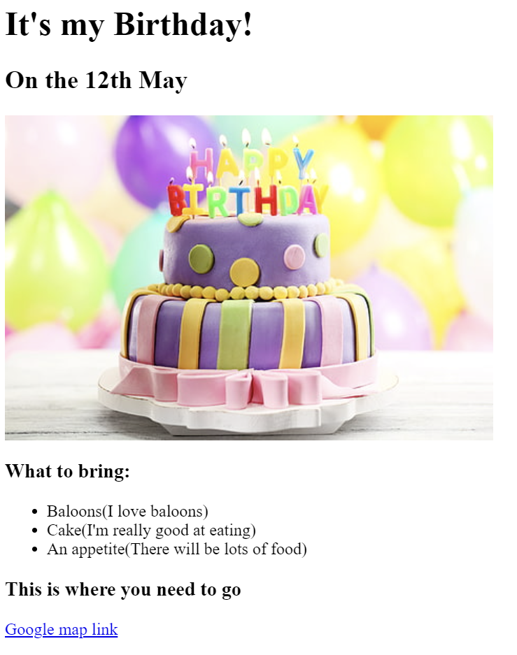
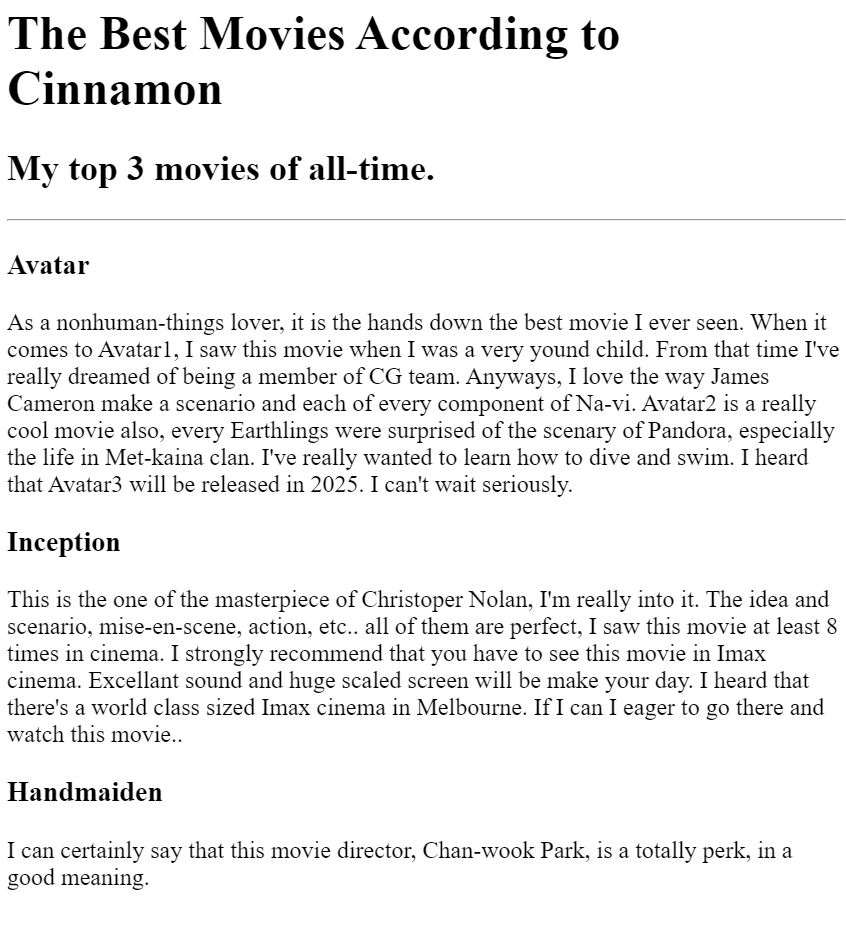

Cinnamon Portfolio
I'm a Web Designer & Developer
My Work

Birthday Invitation
DATE : 20-09-2023
I made this with Dr.Angela Yu

Movie Ranking
DATE : 20-09-2023
I made this with Dr.Angela Yu
About me
Contact me